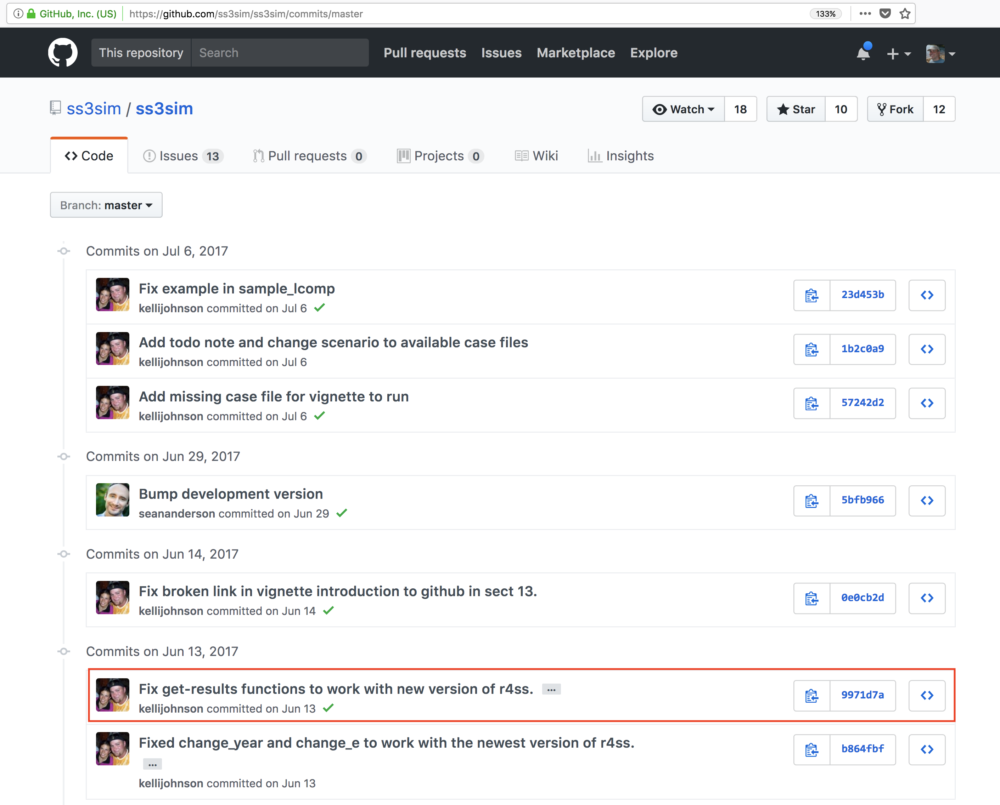

Why
Environmental Data Science (EDS), as many other data-driven research fields, requires a transdisciplinary approach to tackle challenges that often span across several domains of expertise. Working as a team will leverage know-how from diverse collaborators and be the most efficient way to tackle complex problems in EDS. Consequently collaborative skills are required to work effectively as a member of a team. No matter their focus, highly effective teams share certain characteristics:
- Right size
- Diverse group of people with the right mix of skills, knowledge, and competencies
- Aligned purpose and incentives
- Effective organizational structure
- Strong individual contributions
- Supportive team processes and culture
Since Analytical Workflows are rarely linear! and are developed iteratively, the most efficient way to iterate quickly on your analysis is to use scripts and leave copy-pasting behind. Programming as part of a team is different than writing a script for your(present)self. However learning programming as part of a team is not only critical to the efficacy of your team, it will also you help you to grow as a programmer by:
- Motivating you to document well your work
- Helping you to think how to make your work reusable (by you, your future you and others)
- Learning to read others code to build on others work
- Gain further knowledge in software development tools, such as version control
Developing those skills will accelerate your research and open the door for you to contribute to open source projects.
How
It is important to acknowledge that there are many solutions to the complex research questions you will be facing in EDS. Each of those solutions will have several possible implementations, meaning that more likely you might code this implementation differently than your collaborators. Integrated software engineer teams generally try to mitigate this by developing coding standards and conventions that will guide how to write code and develop specific implementation. In scientific teams in which the collaboration is more loose and maybe more ephemeral as well, developing detailed coding standards will be too much of an overhead. However, we think it is important to acknowledge that coding style may varies among the data scientists of a project and it is a good discussion to have among the team at the beginning of the project. For example, in R it could be trying to use the tidyverse approach as much as possible. We also think there are two activities that will make the team more efficient: Code Review and Pair Programming.
Code review feedback
Code review is an asynchronous team activity. Despite its impressive name, code review should be seen by the person asking for the review (submitter) as a great opportunity to have one more pair of eyes looking at your code and providing feedback to make your code better. The reviewer should see this activity as a great way to learn from others.
Pair programming
Pair programming is an synchronous team activity, where several programmers get to work together on the same piece of code. This is a great way to gain a better sense of what coding style people are using and better understand their way of solving challenges. It is also a great way to learn from each other. Generally, there is one Driver who is the person typing at the computer. The other role is called Navigator(s). The Navigator does not write code and focuses on finding solutions to the problem. Their use of computer should be limited to searching online for solutions.
Basic principles & practices
Adapted from Woody Zuill https://www.agileconnection.com/article/getting-started-mob-programming
- Treat each other with kindness, consideration, and respect - makes group work more fun and sustainable
- Driver/navigator pair programming adapted to work with the whole team - For an idea to go from your head into the computer, it must go through someone elses hands. Speak at the highest level of abstraction that the driver (and the rest of the team) is able to digest at the moment
- Timed Rotation - 20-60 minutes. We dont require that everyone take the driver role; it is everyones choice whether to do so
- Whole Team - every contributor to the project is an integral part of the whole team; when we dont have the skills we need within the team, we find someone who does and invite them to work with us to accomplish the needed work
- Reflect, Tune, and Adjust Frequently - based on agile principle: At regular intervals, the team reflects on how to become more effective, then tunes and adjusts its behavior accordingly.
Tips and Tricks for Effective Team Programming
Adapted from Corey Johannsen: https://blog.newrelic.com/2017/10/31/mob-programming-hurdles/
- Suggest, dont dictate: Instead of telling the driver what to type into their editor, we explain what were trying to accomplish and then help the driver find the best solution. Weve found that drivers learn better this way, and they dont just end up feeling like a stenographer. Whenever possible, we ask questions that lead the driver to discover the answers on their own.
- Stay focused and be present: Shut your laptop and put your phone away. Ive struggled with following this guidelinewe all haveand I recognize that the distraction almost always affects the rest of the mob. We tell all our mob members to be present, and if you cant, its OK to leave until you can be.
- Use a timer, but be ready to pause it: We switch drivers every 20 - 60 minutes. However, we often wander off implementation into design discussionsits unavoidableso this is when we pause the timer. This is another key guideline of our mob: the time you spend driving should be dedicated to writing the code that helps complete the task, not discussing design solutions.
- Set specific tasks for each session: When our mob gathers for a session, we first agree on and create a checklist of the tasks we are going to complete, and order them by priority on a whiteboard. This ensures we are all focused on the same task and keeps us moving forward. Additionally, this keeps us aligned with Minimal Marketable Feature (MMF) work, which we can communicate with our engineering and product managers to assure them were completing tasks that align with developing small, self-contained features that demonstrate immediate customer value.
A few more thoughts
More is not always better
- Adding more analysts late into a project can be counterproductive (Brooks law)
- Overtime is not the solution as it will increase likeliness of errors and thus frustration. Try to focus on finding at what time of the day you are the most productive at coding instead
Project management
This is a big topic and will be highly influenced by the team you are working with both in terms of practices and tools used to manage the project. On the coding side, there is a lot to borrow from Agile development approach for scientist. In a nutshell: put it out there fast and iterate. In other words to wait to try to have the percfect code or analaysis before sharing it with your collaborators. It is more efficenet to share and discuss an early / draft version, gather feedback and iterate.
Tools
The good news is there are several tools out there that have been designed to make developing code as a team more efficient. In this course, we will focus on getting familiar with the following:
- Version control system: say goodbye to save as
- Code repository: where we share code and communicate ideas and feedback
Version Control with git and GitHub
Aka goodbye script_JB_03v5b.R !!
Learning Objectives
In this part of the lesson, you will learn:
- Why git is useful for reproducible analysis
- How to use git to track changes to your work over time
- How to use GitHub to collaborate with others
- How to structure your commits so your changes are clear to others
- How to write effective commit messages
The problem with save_as

Every file in the scientific process changes. Manuscripts are edited. Figures get revised. Code gets fixed when problems are discovered. Data files get combined together, then errors are fixed, and then they are split and combined again. In the course of a single analysis, one can expect thousands of changes to files. And yet, all we use to track this are simplistic filenames. You might think there is a better way, and youd be right: version control.
Version control systems help you track all of the changes to your files, without the spaghetti mess that ensues from simple file renaming. In other words, version control is a system that helps you to manage the different versions of your files in an organized manner. It will help you to never have to duplicate files using save as as a way to keep different versions of a file (see below). Version control help you to create a timeline of snapshots containing the different versions of a file. At any point in time, you will be able to roll back to a specific version. Bonus: you can add a short description (commit message) to remember what each specific version is about.
What is the difference between git and GitHub?
- git: is a version control software used to track files in a folder (a repository)
- git creates a timeline or history of your files
- GitHub: is a code repository in the cloud that enables users to store their git repositories and share them with others. Github also add many features to manage projects and document your work.
git

This training material focuses on the code versioning system called Git. Note that there are others, such as Mercurial or svn for example.
Git is a free and open source distributed version control system. It has many functionalities and was originally geared towards software development and production environment. In fact, Git was initially designed and developed in 2005 by Linux kernel developers (including Linus Torvalds) to track the development of the Linux kernel. Here is a fun video of Linus Torvalds touting Git to Google.
How does it work?
Git can be enabled on a specific folder/directory on your file system to version files within that directory (including sub-directories). In git (and other version control systems) terms, this tracked folder is called a repository (which formally is a specific data structure storing versioning information).
What git is not:
- Git is not a backup per se
- Git is not good at versioning large files (there are workarounds) => not meant for data
Repository
Git can be enabled on a specific folder/directory on your file system to version files within that directory (including sub-directories). In git (and other version control systems) terms, this tracked folder is called a repository (which formally is a specific data structure storing versioning information).
Although there many ways to start a new repository, GitHub (or any other cloud solutions, such as GitLab) provide among the most convenient way of starting a repository.

GitHub
GitHub is a company that hosts git repositories online and provides several collaboration features (among which forking). GitHub fosters a great user community and has built a nice web interface to git, also adding great visualization/rendering capacities of your data.
- GitHub.com: https://github.com
- A user account: https://github.com/brunj7
- An organization account: https://github.com/nceas
- NCEAS GitHub instance: https://github.nceas.ucsb.edu/
Lets look at a repository on GitHub
This screen shows the copy of a repository stored on GitHub, with its list of files, when the files and directories were last modified, and some information on who made the most recent changes.

If we drill into the commits for the repository, we can see the history of changes made to all of the files. Looks like kellijohnson and seananderson were fixing things in June and July:

And finally, if we drill into the changes made on June 13, we can see exactly what was changed in each file:
 Tracking these changes, and seeing how they relate to released versions of software and files is exactly what Git and GitHub are good for. We will show how they can really be effective for tracking versions of scientific code, figures, and manuscripts to accomplish a reproducible workflow.
Tracking these changes, and seeing how they relate to released versions of software and files is exactly what Git and GitHub are good for. We will show how they can really be effective for tracking versions of scientific code, figures, and manuscripts to accomplish a reproducible workflow.
GitHub Hands-on
In this section we will be using the GitHub.com website and show you do not need to be a programmer to use version control and edit files on GitHub!
Checks: If you have not already created a GitHub username, please do so now: - GitHub: https://github.com - Follow optional advice on choosing your username
Our asks
As a Team of two: - Help each other, everyone is bringing different skills! Talk it out! - Listen to each other; avoid judgment and solutioneering. - Have fun!
Prompt
Person 1 (owner):
- Create a (first) repository following these instructions steps 1-6

- Add Person 2 as collaborator following these instructions
Person 2: Modify a file
- Check your email to accept the invitation
- Go to the repository website (link is provided in the invitation)
- Click on pen at the top of the README.md file to edit it
- Replace the title (first line) with something better! Maybe
Favorite Desserts - Add your name and your favorite dessert below the title: e.g.
- Julien: crepes - Add a descriptive message
 - Commit your changes
- Commit your changes

Person 1: add a file
Download this csv file about your favorite desserts to your computer
- Just drag and drop it on the Github web page of your repository to upload it
- Add a short message about the file e.g.
Adding dessert csv& hitCommit changes - Your have has been uploaded. Click on the filename to see it!
You should have something similar to this repo: https://github.com/brunj7/favorite-desserts
Bonus Person 2:
Try to edit the csv file directly on GitHub!
No need to be a programmer to contribute to analytical workflows with GitHub!!
Further reading
Collaborative coding:
- A new grads guide to coding as a team - Atlassian: https://www.atlassian.com/blog/wp-content/uploads/HelloWorldEbook.pdf
- 10 tips for efficient programming: https://www.devx.com/enterprise/top-10-tips-for-efficient-team-coding.html
- Agile Manifesto: https://moodle2019-20.ua.es/moodle/pluginfile.php/2213/mod_resource/content/2/agile-manifesto.pdf
Git using RStudio:
- Happy Git and GitHub for the useR: http://happygitwithr.com/
- R packages - Git and GitHub: http://r-pkgs.had.co.nz/git.html#git-init
Git mainly from the command line:
- Interactive git 101: https://try.github.io/
- Very good tutorial about git: https://www.atlassian.com/git/tutorials/what-is-version-control
- Git tutorial geared towards scientists: http://nyuccl.org/pages/gittutorial/
- Short intro to git basics: https://github.com/mbjones/gitbasics
- Git documentation about the basics: http://gitref.org/basic/
- Git documentation - the basics: https://git-scm.com/book/en/v2/Getting-Started-Git-Basics
- Git terminology: https://www.atlassian.com/git/glossary/terminology
- In trouble, guide to know what to do: http://justinhileman.info/article/git-pretty/git-pretty.png
- Want to undo something? https://github.com/blog/2019-how-to-undo-almost-anything-with-git
- Git terminology: https://www.atlassian.com/git/glossary/terminology
- 8 tips to work better with git: https://about.gitlab.com/2015/02/19/8-tips-to-help-you-work-better-with-git/
- GitPro book (2nd edition): https://git-scm.com/book/en/v2
{kind=link}